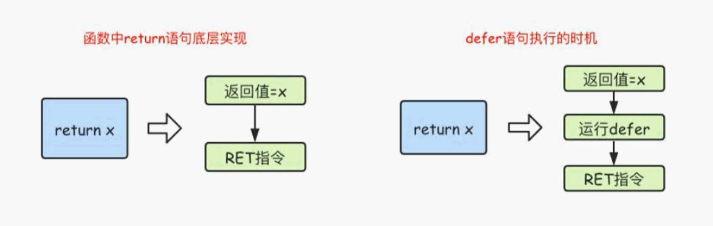

datetime:2020/10/26 15:40
author:nzb
Go的函数
1、函数定义
函数是组织好的、可重复使用的、用于执行指定任务的代码块
Go语言支持：函数、匿名函数和闭包
Go语言中定义函数使用func关键字，具体格式如下：
func 函数名(参数)(返回值) {
函数体
}
其中：
- 函数名：由字母、数字、下划线组成。但函数名的第一个字母不能是数字。在同一个包内，函数名也不能重名
示例
// 求两个数的和
func sumFn(x int, y int) int{
return x + y
}
// 调用方式
sunFn(1, 2)
// 类型可以简写（多个返回值时也是）
func sumFn(x, y int) int{
return x + y
}
// 调用方式
sunFn(1, 2)
获取可变的参数，可变参数是指函数的参数数量不固定。Go语言中的可变参数通过在参数名后面加 ... 来标识。
注意：可变参数通常要作为函数的最后一个参数
func sunFn2(x ...int) int {
sum := 0
for _, num := range x {
sum = sum + num
}
return sum
}
// 调用方法
sunFn2(1, 2, 3, 4, 5, 7)
方法多返回值，Go语言中函数支持多返回值，同时还支持返回值命名，函数定义时可以给返回值命名，并在函数体中直接使用这些变量，最后通过return关键字返回
// 方法多返回值1
func sunFn4(x int, y int)(int, int) {
sum = x + y
sub = x -y
return sum, sub
}
// 方法多返回值2
func sunFn4(x int, y int)(sum int, sub int) {
sum = x + y
sub = x -y
return
}
2、函数类型和变量
2.1、定义函数类型
我们可以使用type关键字来定义一个函数类型，具体格式如下
type calculation func(int, int) int
上面语句定义了一个calculation类型，它是一种函数类型，这种函数接收两个int类型的参数并且返回一个int类型的返回值。
简单来说，凡是满足这两个条件的函数都是calculation类型的函数，例如下面的add 和 sub 是calculation类型
type calc func(int, int) int
// 求两个数的和
func sumFn(x int, y int) int{
return x + y
}
func main() {
var c calc
c = add // 打印：c的类型是：main.cal，事先声明了类型为 calc
d := add // 打印：d的类型是：func(int, int) int，使用类型推导，没有事先声明
}
2.2、方法作为参数
- 类型Python的filter、sorted等方法
/**
传递两个参数和一个方法
*/
func sunFn (a int, b int, sum func(int, int)int) int {
return sum(a, b)
}
- 返回值是函数：使用switch定义方法，这里用到了匿名函数
// 返回一个方法
type calcType func(int, int)int
func sumFn(x int, y int) int{
return x + y
}
func do(o string) calcType {
switch o {
case "+":
return sumFn
/*
return func(i int, i2 int) int {
return i + i2
}
*/
case "-":
// 匿名函数
return func(i int, i2 int) int {
return i - i2
}
case "*":
return func(i int, i2 int) int {
return i * i2
}
case "/":
return func(i int, i2 int) int {
return i / i2
}
default:
return nil
}
}
func main() {
add := do("+")
fmt.Println(add(1,5))
}
3、匿名函数
函数当然还可以作为返回值，但是在Go语言中，函数内部不能再像之前那样定义函数了，只能定义匿名函数。匿名函数就是没有函数名的函数，匿名函数的定义格式如下
func (参数)(返回值) {
函数体
}
匿名函数因为没有函数名，所以没有办法像普通函数那样调用，所以匿名函数需要保存到某个变量或者作为立即执行函数：
func main() {
// 第一种
func () {
fmt.Println("匿名自执行函数")
}()
//第二种
a := func () {
fmt.Println("匿名自执行函数")
}
a()
}
4、闭包
4.1、全局变量和局部变量
全局变量的特点：
- 常驻内存
- 污染全局
局部变量的特点（注意if语句中的局部变量）
- 不常驻内存
- 不污染全局
4.2、闭包
- 可以让一个变量常驻内存
- 可以让一个变量不污染全局
闭包可以理解成 “定义在一个函数内部的函数”。在本质上，闭包就是将函数内部 和 函数外部连接起来的桥梁。或者说是函数和其引用环境的组合体。
- 闭包是指有权访问另一个函数作用域中的变量的函数
- 创建闭包的常见的方式就是在一个函数内部创建另一个函数，通过另一个函数访问这个函数的局部变量
注意：由于闭包里作用域返回的局部变量资源不会被立刻销毁，所以可能会占用更多的内存，过度使用闭包会导致性能下降，建议在非常有必要的时候才使用闭包。
// 闭包的写法：函数里面嵌套一个函数，最后返回里面的函数就形成了闭包
// 返回值是一个匿名函数
func adder() func() int {
var i = 10
return func() int {
return i + 1
}
}
func main() {
var fn = adder()
fmt.Println(fn())
fmt.Println(fn())
fmt.Println(fn())
}
最后输出的结果
11
11
11
另一个闭包的写法，让一个变量常驻内存，不污染全局
func adder2() func(y int) int {
var i = 10
return func(y int) int {
i = i + y
return i
}
}
func main() {
var fn2 = adder2()
fmt.Println(fn2(10)) // 20
fmt.Println(fn2(10)) // 30
fmt.Println(fn2(10)) // 40
}
5、defer语句
Go 语言中的defer 语句会将其后面跟随的语句进行延迟处理。在defer归属的函数即将返回时，将延迟处理的语句按defer定义的逆序进行执行，也就是说，先被defer的语句最后被执行，最后被defer的语句，最先被执行。
// defer函数
fmt.Println("1")
defer fmt.Println("2")
fmt.Println("3")
fmt.Println("4")
defer将会延迟执行
1
3
4
2
如果有多个defer修饰的语句，将会逆序进行执行
// defer函数
fmt.Println("1")
defer fmt.Println("2")
defer fmt.Println("3")
fmt.Println("4")
运行结果
1
4
3
2
如果需要用defer运行一系列的语句，那么就可以使用匿名函数
func main() {
fmt.Println("开始")
defer func() {
fmt.Println("1")
fmt.Println("2")
}()
fmt.Println("结束")
}
运行结果
开始
结束
1
2
5.1、defer执行时机
在Go语言的函数中return语句在底层并不是原子操作，它分为返回值赋值和RET指令两步。而defer语句执行的时机就在返回值赋值操作后，RET指令执行前，具体如下图所示

- 示例1 ```text package main
import "fmt"
func f1() int{ x := 5 defer func(){ x++ }() return x // 5，匿名返回值，直接返回 5 }
func f2() (x int){ defer func(){ x++ }() return 5 // 6， 顺序：x=0, return 5, 赋值 x, 再执行 x++，返回 }
func f3() (y int){ 变量x, y不一样 x := 5 defer func(){ x++ }() return x // 5 因为 y 不存在，先把 x 的值 5 赋给了 y, 所以 x++ 后不会改变返回值 }
func f4() (x int){ defer func(x int){ // 参数可类比 ay int // x = 0 x++ // y ++ }(x) // defer 注册要延迟执行的函数时该函数所有的参数都需要确定其值，及 x = 0 return 5 // 5 }
func main() { fmt.Println(f1()) fmt.Println(f2()) fmt.Println(f3()) fmt.Println(f4()) }
结果
```text
5
6
5
5
- 示例2 ```text package main
import "fmt"
// defer 注册要延迟执行的函数时该函数所有的参数都需要确定其值，及 x = 0
func calc(index string, a, b int) int { ret := a + b fmt.Println(index, a, b, ret) return ret }
func main() { x := 1 y := 2 defer calc("AA", x, calc("A", x, y)) x = 10 defer calc("BB", x, calc("B", x, y)) y = 20 }
/* // 注册 defer calc("AA", x, calc("A", x, y)) defer calc("BB", x, calc("B", x, y)) // 执行 defer calc("BB", x, calc("B", x, y)) defer calc("AA", x, calc("A", x, y))
1、calc("A", x, y) A 1 2 3 2、calc("B", x, y) B 10 2 12 3、calc("BB", x, calc("B", x, y)) BB 10 12 22 4、calc("AA", x, calc("A", x, y)) AA 1 3 4
*/
结果
```text
A 1 2 3
B 10 2 12
BB 10 12 22
AA 1 3 4
6、panic/revocer处理异常
Go语言中是没有异常机制，但是使用panic / recover模式来处理错误
- panic：可以在任何地方引发
- recover：只有在defer调用函数内有效
func fn1() {
fmt.Println("fn1")
}
func fn2() {
panic("抛出一个异常")
}
func main() {
fn1()
fn2()
fmt.Println("结束")
}
上述程序会直接抛出异常，无法正常运行
fn1
panic: 抛出一个异常
解决方法就是使用 recover进行异常的监听
func fn1() {
fmt.Println("fn1")
}
func fn2() {
// 使用recover监听异常
defer func() {
err := recover()
if err != nil {
fmt.Println(err)
}
}()
panic("抛出一个异常")
}
func main() {
fn1()
fn2()
fmt.Println("结束")
}
7、异常运用场景
模拟一个读取文件的方法，这里可以主动发送使用panic 和 recover
func readFile(fileName string) error {
if fileName == "main.go" {
return nil
} else {
return errors.New("读取文件失败")
}
}
func myFn () {
defer func() {
e := recover()
if e != nil {
fmt.Println("给管理员发送邮件")
}
}()
err := readFile("XXX.go")
if err != nil {
panic(err)
}
}
func main() {
myFn()
}
8、内置函数
| 内置函数 | 介绍 |
|---|---|
| close | 主要用来关闭channel |
| len | 用来求长度，比如string、array、slice、map、channel |
| new | 用来分配内存、主要用来分配值类型，比如 int、struct ，返回的是指针 |
| make | 用来分配内存，主要用来分配引用类型，比如chan、map、slice |
| append | 用来追加元素到数组、slice中 |
| panic\recover | 用来处理错误 |